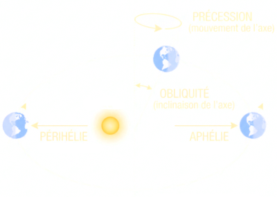

Cycles de Milankovitch
Dans la simulation de −51 Ma à aujourd'hui : l'insolation d'été des hautes latitudes fond ou épargne les calottes, l'obliquité ε règle le gradient pôle-équateur — l'effet sur l'énergie annuelle du globe est négligeable. Orbite : Laskar et al. (2004).

✕
Comment l'orbite agit dans la simulation
L'orbite de la Terre — obliquité ε (22,1° à 24,5° tous les 41 000 ans), précession (19 000 à 23 000 ans),
excentricité (100 000 et 405 000 ans) — ne change presque rien à l'énergie annuelle reçue par le
globe . Elle change sa répartition entre l'équateur et les pôles, et entre les saisons.
Le modèle la prend à la date de chaque calcul, de −51 Ma à aujourd'hui (solution La2004) ; avant, l'obliquité est
celle de l'époque et l'orbite celle de 1950.
Obliquité → gradient pôle-équateur. L'insolation annuelle de chaque bande de latitude
(intégrée jour par jour) entre dans le bilan méridien de North : par degré d'obliquité en plus, environ
+4,5 W/m² sur les pôles, −1,3 W/m² sur les tropiques, exactement 0 sur le globe. L'amplitude des saisons
suit sin ε.Été des hautes latitudes → calottes. L'écart d'insolation jour par jour à l'orbite de
1950, absorbé les jours de fonte, fond la glace en plus des degrés-jours (Robinson & Goelzer 2014) :
c'est par lui qu'entrent la précession et l'excentricité. Un été froid laisse survivre la neige, une calotte
naît ; un été chaud fond sa marge.Excentricité → Soleil moyen de l'année , S / √(1 − e²) : au plus 0,2 %.
C'est pour ça que la courbe d'insolation d'été à 65° N de l'onglet Histoire n'est pas une température : elle
agit par les calottes, que le CO₂ et le méthane amplifient.
Références : Laskar et al. 2004 (A&A 428:261) · Berger 1978 (J. Atmos. Sci. 35:2362) ·
North 1981 (Rev. Geophys. 19:91) · Robinson & Goelzer 2014 (The Cryosphere 8:1419) ·
Bereiter et al. 2015 et Loulergue et al. 2008 (carottes EPICA).
Détail des entrées : popup 📚 Biblio de la page principale.